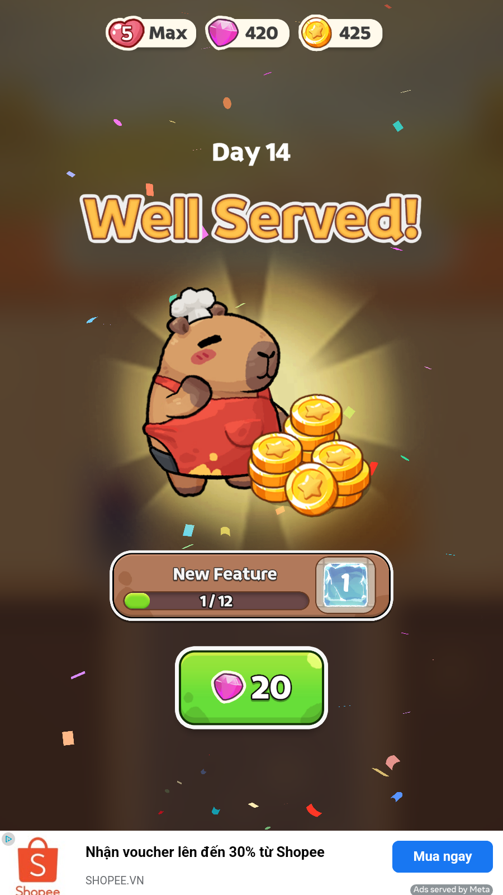
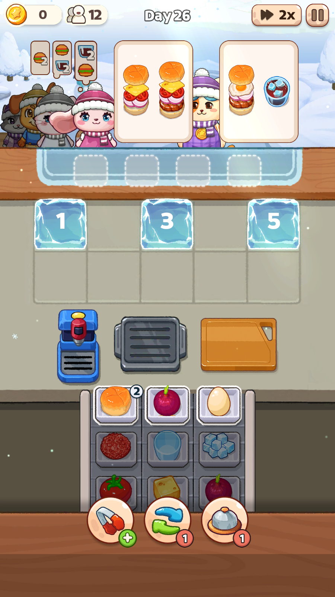
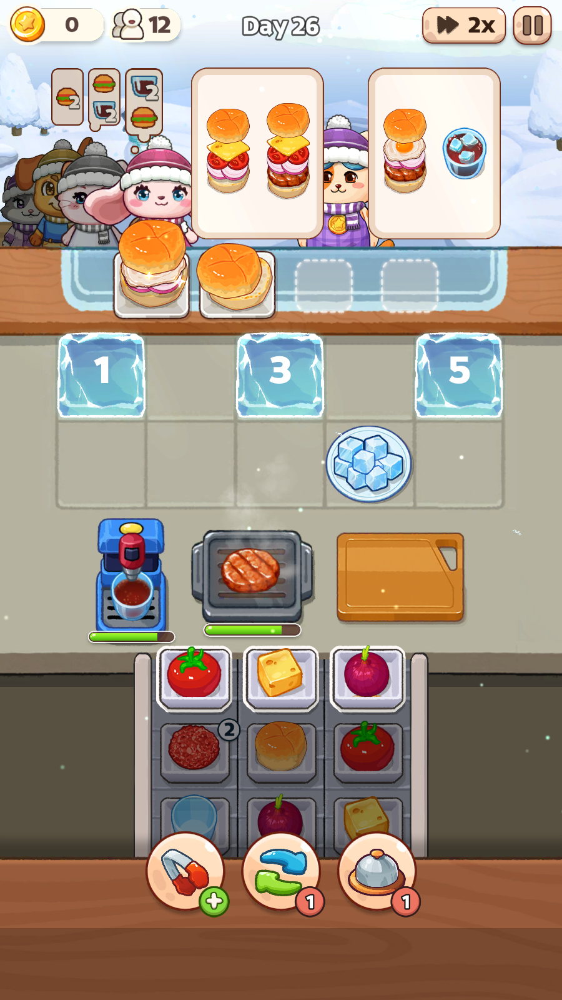

Khối băng theo đơn (Ice Block, Grid-OrderLock)
Mô tả
- Một số ô trên lưới chuẩn bị 5×2 bị khối băng có số phủ lên: ô đó không đặt được đĩa cho tới khi băng tan.
- Số trên băng giảm 1 mỗi lần phục vụ xong một món (Code: sự kiện
CustomerServedEventmang món vừa giao); về 0 thì băng vỡ và ô dùng được. - Có 280/1 030 level APK (316/1 090 server live 16/11), mỗi level 1–6 ô đóng băng với số đếm từ 1 đến 10 (phổ biến nhất là 3).
- Burger: level 26 là level đầu (lưới
#2:1,,#2:3,,#2:5,,,,,); popup "Ice Block" hiện ở đầu level đó và thanh "New Feature" của Playtest 16/11 đang đếm tới khối băng này (1/12 sau Day 14).
Thiết kế chi tiết
Tóm tắt thiết kế
- Code Băng đếm theo sự kiện món được giao (
IngCellStatus.OnServed,CustomerServedEvent.item), không theo thời gian: người chơi điều khiển tốc độ tan bằng nhịp phục vụ. - Code Ô băng khoá chỗ đặt đĩa trên lưới 10 ô: hiệu ứng thật là giảm sức chứa, không phải chặn nguyên liệu.
- APK 280/1 030 level (27%); 710 ô băng, số đếm phổ biến nhất là 3.
- Live 16/11 Server live: 316/1 090 level; bento tăng từ 13 lên 42 level, pizza giảm từ 16 xuống 5.
- Playtest Bản 1.11: burger L26 có 3 ô băng 1, 3, 5; popup intro nói "customers" nhưng đo thấy giảm theo món. Bản 1.15 chỉ thấy thanh New Feature đang đếm tới băng.
- Nhận định Số đếm nhỏ (1–3) dạy cơ chế rồi tăng dần: đủ thấp để không bị khoá lâu, đủ cao để làm lưới chật.
Luồng người chơi từng bước
- Báo trướcGiao diện PlaytestMàn thắng Day 14: thanh "New Feature 1/12" với icon khối băng.

Day 14 (1.15): thanh "New Feature 1/12" với icon khối băng số 1, cơ chế kế tiếp - Popup introGiao diện CodeĐầu level đầu có băng: "Ice Block – Serve a number of customers to break the ice block on the table." / "Got it!".

Day 26 (burger L26): 3 khối băng số 1, 3, 5 trên hàng sát quầy của lưới 5×2 (bản 1.11, 26/10) - Phục vụ để đếm ngượcNgười chơi PlaytestMỗi món giao làm số giảm 1 kèm hiệu ứng nứt.

Burger L26 trong lúc chơi: băng đếm ngược khi phục vụ món (bản 1.11, 26/10) - Băng vỡHệ thống Code
IngCellStatus.Unlockgỡ lớp băng, ô dùng được.


Số level dùng khối băng theo map
| Map | APK: số level (level đầu) | Server live 16/11: số level (level đầu) |
|---|---|---|
| burger | 26 (L26) | 25 (L26) |
| coffee | 20 (L17) | 18 (L17) |
| sushi | 28 (L5) | 29 (L5) |
| pasta | 22 (L10) | 22 (L10) |
| icecream | 45 (L4) | 46 (L4) |
| sandwich | 22 (L4) | 22 (L4) |
| tteokbokki | 44 (L4) | 43 (L4) |
| seafood | 15 (L10) | 16 (L10) |
| dimsum | 29 (L10) | 30 (L10) |
| pizza | 16 (L4) | 5 (L4) |
| bento | 13 (L4) | 42 (L4) |
| croissant | - | 7 (L7) |
| tacos | - | 11 (L4) |
| Tổng | 280 / 1 030 level chơi được | 316 / 1 090 level chơi được |
Nguồn: Data/levels/_stats.json (APK), Docs/LEVEL_DATA.md (server).
Phân bố số đếm n (APK, 11 map)
| n (số món cần phục vụ) | Số ô |
|---|---|
| 1 | 17 |
| 2 | 44 |
| 3 | 190 |
| 4 | 159 |
| 5 | 35 |
| 6 | 66 |
| 7 | 49 |
| 8 | 33 |
| 9 | 16 |
| 10 | 10 |
| 11 | 9 |
| 12 | 12 |
| 14 | 4 |
| 15 | 2 |
| 16 | 1 |
| 17 | 1 |
| 18 | 6 |
| 19 | 2 |
| 20 | 6 |
| 21 | 1 |
| 22 | 3 |
| 23 | 3 |
| 24 | 5 |
| 25 | 4 |
| 26 | 4 |
| 27 | 5 |
| 28 | 6 |
| 29 | 2 |
| 30 | 12 |
| 32 | 3 |
Tổng 710 ô; nguồn Data/levels/*/L*.json.
Mã hoá trong chuỗi level
| Thành phần | Cú pháp | Ghi chú |
|---|---|---|
| Phần lưới | cell,cell,... (10 ô, hàng trước, rộng 5) | ô rỗng = ô thường |
| OrderLock | #2:n | n < 2 → 1 |
| Ví dụ burger L26 | #2:1,,#2:3,,#2:5,,,,, | ô 0, 2, 4 (hàng 0) có băng 1, 3, 5 |
Cú pháp theo Tools/data/fp_level_syntax.py.
Vận dụng cho game khác
- Đếm ngược bằng hành động chính của game (giao món) thay vì đồng hồ, để người chơi kiểm soát độ khó.
- Chướng ngại giảm tài nguyên (chỗ đặt) thay vì chặn hẳn, giữ cảm giác công bằng.
Bảng tổng hợp mọi tính năng đã làm chi tiết: FoodiePop_ThietKeChiTiet.xlsx.
Mở khóa & điểm vào
Bật khi section lưới của level có #2:n trên ô. Burger L26, coffee L17, sushi L5, icecream/sandwich/tteokbokki/pizza/bento L4 (xem bảng). Popup intro chạy một lần (PlayerPrefs IntroGridMechanic_OrderLock).
Điểm vào:
- Thanh "New Feature" ở màn thắng (icon khối băng, khoá
Grid-OrderLock) và popup "Ice Block" / "Awesome" - Đầu level đầu tiên có băng: popup
UIPopup-IntroMechanic-Grid-OrderLock("Ice Block" / "Got it!") - Lưới chuẩn bị 5×2: các ô có khối băng số 1, 3, 5...
Cách hoạt động
- Chuỗi level có 3 phần cách nhau
~; phần lưới làcells ["|" toolObstacles], ô thứ i (hàng-ưu-tiên, width 5) là chuỗi#effect. Ô#2:nlà OrderLock. IngCellStatus.Setupđọc từngGridCellEffectData: effect 2 → tạoLockEntryvớiremainingServes = n(n < 2 thì thành 1), vẽ lớp băng có số (IngCellOverlayStatus.OrderLock).- Ô bị khoá không nhận đĩa: các ô trống còn lại của lưới giảm,
GridIngControllerchỉ đặt đĩa vào ô mở. - Mỗi
CustomerServedEvent(một món được giao) gọiIngCellStatus.OnServed: mọiLockEntrykhông gắn món giảmremainingServesđi 1. - Còn > 0:
PlayBreakIcechạy hiệu ứng nứt và cập nhật số. Hết (≤ 0):IngCellStatus.Unlockxoá lớp băng, ô mở, gọi callback_onUnlocked. - Ô mở dùng được như ô thường; lưới nhiều ô hơn cho tới hết level.
Ảnh chụp
Bấm ảnh để phóng to, dùng phím ← → để chuyển ảnh. Nhãn màu cho biết nguồn bằng chứng của ảnh.
Số liệu chính
| Chỉ số | Giá trị | Nguồn |
|---|---|---|
| Level dùng khối băng (APK) | 280 / 1 030 | Data/levels/_stats.json (grid.OrderLock) |
| Level dùng khối băng (server live 16/11) | 316 / 1 090 | Docs/LEVEL_DATA.md |
| Tổng ô băng (APK) | 710 ô | Data/levels/* |
| Ô băng mỗi level | 1–6 (nhiều nhất: 3 ô, 83 level) | Data/levels/* |
| Level đầu (burger) | L26 | Data/levels/_stats.json |
Use case (8)
Bấm vào từng use case để mở. Mở/đóng tất cả
UC-01 Khối băng xuất hiện trên lưới
Các bước- Parse phần lưới, ô
#2:n IngCellStatus.Setuptạo LockEntry- Vẽ băng có số
| Actor | System |
|---|---|
| Trigger | Level tải xong |
| Điều kiện | Level có #2:n trong lưới |
| Kết quả | Ô lưới bị che bởi khối băng số n |
| Quy tắc / số liệu | n < 2 bị ép về 1; cùng một level có thể có 1–6 ô băng (APK: 1 ô 63 level, 2 ô 76, 3 ô 83, 4 ô 45, 5 ô 12, 6 ô 1) |
| Evidence | IngCellStatus.Setup |
UC-02 Phục vụ một món làm băng giảm
Các bướcIngCellStatus.OnServed- Mỗi LockEntry không có dishId:
remainingServes -= 1 PlayBreakIcenếu còn > 0
| Actor | Player |
|---|---|
| Trigger | Một món giao cho khách (CustomerServedEvent) |
| Điều kiện | Có ít nhất 1 khối băng |
| Kết quả | Số trên băng giảm 1, có hiệu ứng nứt |
| Quy tắc / số liệu | Sự kiện mang DragItem item (món), nên đếm theo món chứ không theo khách; bản 1.11 đo: khách có 2 món làm số giảm 2 (Playtest bản 1.11, burger L26). Popup ghi "customers" nhưng không khớp |
| Evidence | IngCellStatus.OnServed |
UC-03 Băng tan
Các bướcIngCellStatus.Unlockgỡ lớp băng- Ô thành ô lưới thường
- Gọi
_onUnlocked
| Actor | Player |
|---|---|
| Trigger | remainingServes về 0 |
| Điều kiện | Số đếm = 0 |
| Kết quả | Ô đặt đĩa được |
| Quy tắc / số liệu | Nhiều băng tan cùng lúc nếu cùng về 0 |
| Evidence | IngCellStatus.Unlock |
UC-04 Đặt đĩa khi chỉ còn ít ô mở
Các bướcConveyorPickup.HasRoomForđếm ô còn trống- Lưới đầy thì
IngGridFullAlertnháy viền đỏ
| Actor | Player |
|---|---|
| Trigger | Người chơi lấy nguyên liệu nhưng lưới có ô bị khoá |
| Điều kiện | Có băng chưa tan |
| Kết quả | Lưới giữ ít chỗ hơn 10, dễ rơi vào "Out of Slots" |
| Quy tắc / số liệu | Mỗi ô băng giảm 1 ô chỗ cho tới khi tan |
| Evidence | IngGridLayout.SetCellLocked |
UC-05 Băng tan nhờ phục vụ nhanh
Các bước- Nấu và phục vụ món dễ để đếm ngược
- Băng nhỏ (1–3) tan sớm
| Actor | Player |
|---|---|
| Trigger | Người chơi ưu tiên giao món |
| Điều kiện | Hết nước đi khác |
| Kết quả | Chiến lược: phục vụ trước khi lấy thêm nguyên liệu |
| Quy tắc / số liệu | Level L26 burger: 3 ô băng với số 1, 3, 5 — tan lần lượt sau 1, 3, 5 món |
| Evidence | IngCellStatus.OnServed |
UC-06 Popup giới thiệu ở đầu level
Các bướcShowTutorialquétGridEffectType- Tìm
_introNewGridConfigs(gridEffectType 2) - Mở
UIPopup-IntroMechanic-Grid-OrderLock Variant - "Got it!" →
SetDoneIntroNewGridMechanic
| Actor | Player |
|---|---|
| Trigger | Level có #2 lưới và chưa có cờ IntroGridMechanic_OrderLock |
| Điều kiện | Chưa có cờ |
| Kết quả | Cờ = 1 |
| Quy tắc / số liệu | Popup có minh hoạ số 3, 2, 1 trên khối băng |
| Evidence | UIInLevelCakeOrder.SetDoneIntroNewGridMechanic |
UC-07 Popup "New Feature" ở màn thắng liền trước
Các bướcUIPopupNewFeather.GetNewObstacleKeys→Grid-OrderLockUINextFeatherButtonhiện icon khối băng và "x/12"
| Actor | Player |
|---|---|
| Trigger | Thắng level N, level N+1 lần đầu có băng |
| Điều kiện | Level kế có cơ chế mới |
| Kết quả | Báo trước cơ chế; Playtest sau Day 14 hiện "New Feature 1/12" icon băng |
| Quy tắc / số liệu | Từ Day 14 (Linked) tới Day 26 (Ice Block) cách nhau 12 level → tử số 1/12 (suy luận: mẫu số là khoảng cách tới cơ chế kế) |
| Evidence | UINextFeatherButton.UpdateFeatureAvailable |
UC-08 Level kết thúc khi còn băng
Các bước- Thắng level dù băng còn
- Không có luật cần băng tan để thắng
| Actor | Player |
|---|---|
| Trigger | Hết khách |
| Điều kiện | Hết khách |
| Kết quả | Thắng bình thường |
| Quy tắc / số liệu | Băng chỉ là chướng ngại, không có mục tiêu |
| Evidence | IngCellStatus.Unsubscribe |
Cấu hình (7)
Gộp mọi nguồn: const trong code, giá trị mặc định trong APK, storage key, AB test, cờ server.
| Nguồn | Key | Kiểu | Giá trị | Ý nghĩa | Nơi định nghĩa |
|---|---|---|---|---|---|
| level string | grid cell token #2:n | effect | OrderLock: mở sau n món phục vụ (n < 2 → 1) | khối băng | GridLayoutTranslator.Parse, GridEffectType.OrderLock = 2 |
| enum | GridEffectType | enum | Normal 0, Blocked 1, OrderLock 2, IngredientSlot 3, ColorLock 4 | loại hiệu ứng ô lưới | CakeOrder.GridEffectType |
| Data/levels | Giá trị n trong dữ liệu (APK) | int | n=1: 17 ô, n=2: 44 ô, n=3: 190 ô, n=4: 159 ô, n=5: 35 ô, n=6: 66 ô, n=7: 49 ô, n=8: 33 ô, n=9: 16 ô, n=10: 10 ô, n=11: 9 ô, n=12: 12 ô, n=14: 4 ô, n=15: 2 ô, n=16: 1 ô, n=17: 1 ô, n=18: 6 ô, n=19: 2 ô, n=20: 6 ô, n=21: 1 ô, n=22: 3 ô, n=23: 3 ô, n=24: 5 ô, n=25: 4 ô, n=26: 4 ô, n=27: 5 ô, n=28: 6 ô, n=29: 2 ô, n=30: 12 ô, n=32: 3 ô | tổng 710 ô băng trong 280 level | Data/levels/* |
| Data/levels | Vị trí ô băng | int | hàng 0: 404 ô, hàng 1: 306 ô | lưới 5×2, hàng 0 là hàng sát quầy | Data/levels/* |
| storage key | PlayerPrefs IntroGridMechanic_OrderLock | int | 1 = đã xem | cờ intro | UIInLevelCakeOrder.GetKeyIsDoneIntroNewGridMechanic |
| asset | UINewFeartherConfig["Grid-OrderLock"] | NewFeatherConfig | featherName "Ice Block"; featherDesc "Serve a number of customers to break the ice block on the table."; key ice_block | nội dung popup New Feature | UINewFeatureConfigObstacle.asset |
| asset (UI_InGame en-GB) | Intro popup text | string | "Ice Block" / "Serve a number of customers to break the ice block on the table." / "Got it!" | popup UIPopup-IntroMechanic-Grid-OrderLock Variant | Map-common_assets/Prefabs/UI/InGame |
Backend / server
| Command | Chiều | Mục đích |
|---|---|---|
Remote Config map_config_<map>_lv_<n> / map_config_<map>_lv_all_override_default | server→client | Chuỗi level (khách ~ lưới ~ hàng đợi) mang token của cơ chế này; server live 16/11 ghi đè 1 090 level (xem Docs/LEVEL_DATA.md). Không có API riêng cho cơ chế. |
Giao diện (UI)
| Element | Class | Mục đích |
|---|---|---|
| Khối băng có số trên ô lưới | AnhPD.FoodOrder.IngCellStatus | vẽ overlay, hiệu ứng nứt và vỡ |
| Popup giới thiệu | CakeOrder.InGame.UIPopupIntroNewMechanics | prefab Grid-OrderLock |
| Nút New Feature | TrungKien.UI.NewFearther.UINextFeatherButton | icon khối băng và tiến độ |
Storage keys
IntroGridMechanic_OrderLock
Còn thiếu / chưa xác minh
- Đếm theo món hay theo khách trên bản 1.15 chưa đo lại: code 1.15 gọi
OnServedtheoCustomerServedEventmang món; kết quả 1.11 (giảm 1 mỗi món) chưa kiểm trên 1.15 vì playtest 16/11 chưa gặp khối băng. - Playtest 16/11 (Day 13–20) chưa gặp khối băng thật; ảnh intro / băng đếm ngược là bản 1.11.
- Không thấy event analytics riêng cho cơ chế này.
Tính năng liên quan
Khoá màu và chìa (Lock & Key, Grid-ColorLock) Ô đóng băng (Frozen Item, token #1:n) Lưới nguyên liệu và hàng đợi Luồng màn: vào, thắng, thua Giới thiệu tính năng mới (New Feature x/N) Định dạng level, độ khó & thống kê
Nguồn đã đọc
_analysis/code/decompiled/Assembly-CSharp/AnhPD.FoodOrder.IngCellStatus.c (Setup, OnServed, Unlock)_analysis/code/stubs/Assembly-CSharp/AnhPD.FoodOrder.IngCellStatus.cs_analysis/code/decompiled/CakeOrder/CakeOrder.InGame.UIInLevelCakeOrder+__c__DisplayClass106_0.cData/config/UINewFeartherConfig.json_rip/ExportedProject/Assets/_Production/Map-common_assets/Scenes/GameplayHUD.unity (_introNewGridConfigs)Docs/LEVEL_DATA.mdData/levels/*_analysis/live/fp_20261116/RESULTS_LIVE.md (lvl14_end_1)F:/0_Phuc/Clone/Pop/Docs/decode/GAMEPLAY.md (H11, V9)F:/0_Phuc/Clone/Pop/_analysis/live/fp_20261026_l2/shots (l26_*)